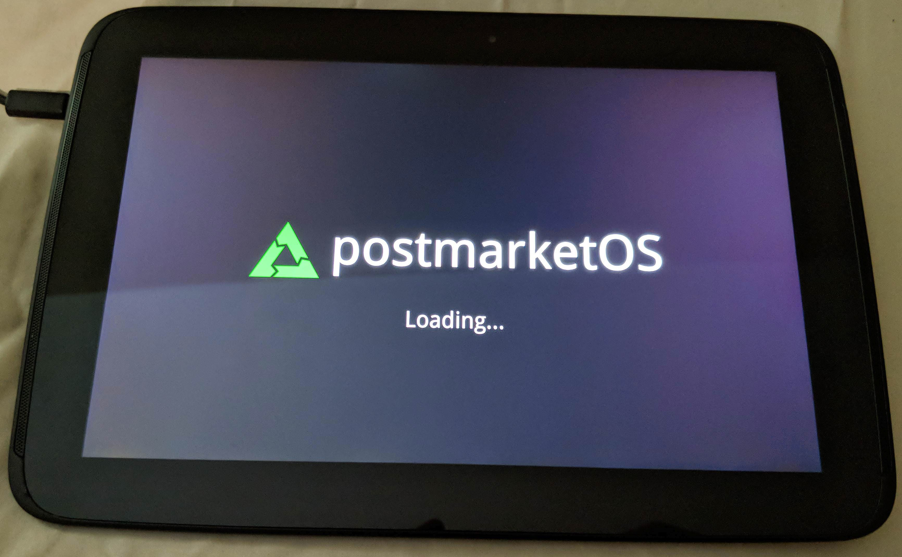
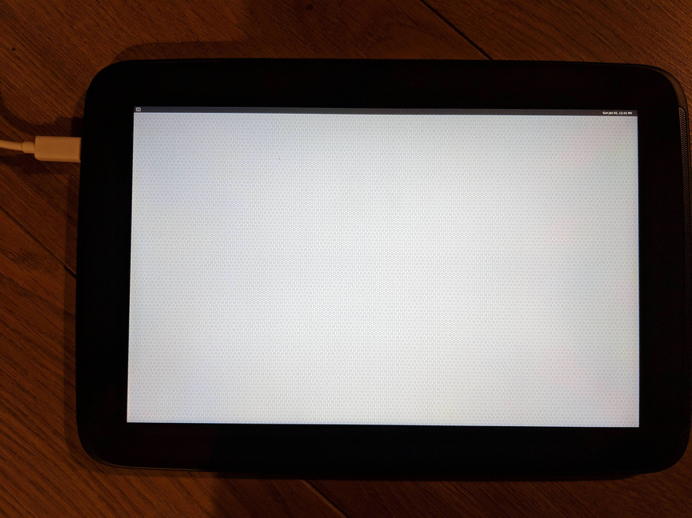
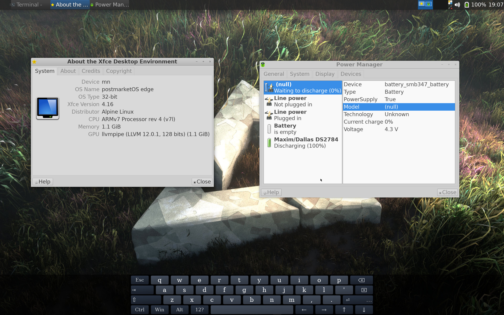
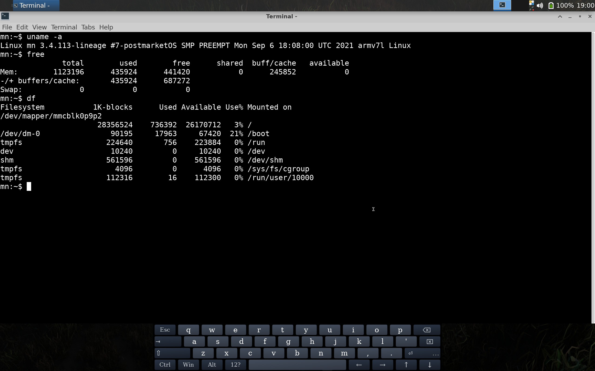

Google Nexus 10 (samsung-manta)
|
 Google Nexus 10 | |
| Manufacturer | Google (Samsung) |
|---|---|
| Name | Nexus 10 |
| Codename | samsung-manta |
| Released | 2012 |
| Category | testing |
| Original software | Android 4.2.2 on Linux 3.0 |
| postmarketOS kernel | Lineage 3.4.113 |
| Hardware | |
| Chipset | Samsung Exynos 5250 |
| CPU | 1.7 GHz Dual-core Cortex-A15 |
| GPU | Mali T-604 |
| Display | 2560x1600 IPS |
| Storage | 16/32 GB |
| Memory | 2 GB |
| Architecture | armv7 |
| Unixbench Whet/Dhry score | 956.9 |
{kind=link}
| USB Networking |
Works
|
|---|---|
| Flashing |
Works
|
| Touchscreen |
Works
|
| Display |
Works
|
| WiFi |
Works
|
| FDE | |
| Mainline | |
| Battery |
Partial
|
| 3D Acceleration | |
| Audio |
Works
|
| Bluetooth | |
| Camera | |
| GPS | |
| Mobile data |
Unavailable
|
| SMS |
Unavailable
|
| Calls |
Unavailable
|
| USB OTG / USB-C Role switching |
Works
|
| NFC | |
| Accelerometer | |
|---|---|
| Magnetometer | |
| Ambient Light | |
| Proximity | |
| Hall Effect | |
| Barometer | |
| Power Sensor | |
| Camera Flash | |
|---|---|
| Keyboard | |
| Touchpad | |
| USB-A | |
| HDMI/DP | |
| Ir TX | |
| Ir RX | |
| Stylus | |
| Haptics | |
| Ethernet | |
| FOSS bootloader | |
Contributors
- BakaOsaka
- MartijnBraam
- Blacksilver
Users owning this device
- Blacksilver (Notes: + Replaced battery)
- Grom (Notes: 2 of them)
- Lantizia (Notes: 4 of them)
- MartijnBraam
- Russanandres (Notes: CyanogenMod 10)
How to enter flash mode
- Connect a USB cable
- Power the device off
- Hold power + volume down
- You should get a bootloader screen saying "Downloading... Do not turn off target !!"
Installation
See Installation guide. If this doesn't work, try Android Recovery Zip Installation.
In either case, the /system partition isn't big enough for all but the smallest interfaces. So if you install anything bigger, use --partition or --recovery-install-partition, depending on which way you install it, to choose a bigger partition. /data should have more than enough space.
Reverting back to stock / recreating broken partitions
Because postmarketOS uses partitions differently than android, reverting back to stock is a bit more complicated. These instructions should work in any situation, except if you managed to break the bootloader or physically damaged your device.
- Have fastboot installed
- Download and unzip the correct factory image. In most cases you'll probably want the latest one (LMY49J).
- Open a terminal and navigate into the folder you just unzipped.
- Connect your Nexus 10 via USB, and boot to bootloader (hold power+vol_up+vol_down until you see a screen that says bootloader)
- On Linux/Mac:
./flash-all.shOn Windows:./flash-all.bat - The script will reflash the stock bootloader/recovery/system, wait for it to finish. Once it is done, the tablet will reboot and attempt to boot into android. Because some partitions are still broken, this means that it will be stuck at the android splash screen (if you chose the latest version, it's some colored dots flying around) indefinitely.
- To solve this, boot to bootloader again (hold power+vol_up+vol_down), use the volume buttons to choose
recovery modeand select it by tapping the power button. - After a short while, you should be at a mostly black screen, with a small android and a red triangle. To get to the actual recovery menu, tap the volume_up button while holding power.
- Now choose
wipe data/factory reset, thenYes -- delete all user data, and once it is finished, choosereboot system now. - Wait until it shows you the first time setup screen for android, and everything should be fixed :)
Power
By default the device will drain its battery even if it is connected to your PC because USB does only provide ~100mA. This can be changed with:
sudo sh -c "echo 1 > /sys/class/power_supply/smb347-usb/usb_hc"
If you want to use a standalone charger, the following commands have to be issued after you plugged in the charger:
sudo sh -c "echo 1 > /sys/class/power_supply/smb347-usb/charger_detection"
Issue the following command to monitor the power consumption:
cat /sys/class/power_supply/ds2784-fuelgauge/current_now
A positive current value means that the battery is charging while a negative current discharges the battery.
Touchscreen
After booting the UI doesn't react to user input. Restarting lightdm solves this:
sudo rc-service lightdm restart
Black screen after postmarketOS splash screen
For some unknown reason, most interfaces only show a black screen after booting. If you have your device connected via USB, you can execute sudo startx over ssh. Somehow, this seems to fix it, at least temporarily (plasma-desktop just goes back to showing a black screen after login).
Hardware status (hwtest)
| Category | Model | Path | Status | Value |
|---|---|---|---|---|
| framebuffer | /sys/class/graphics/fb0 | Working | U:2560x1600p-60 | |
| magnetometer | mpu6050 | /sys/bus/iio/devices/iio:device0 | Broken | |
| accelerometer | mpu6050 | /sys/bus/iio/devices/iio:device0 | Broken | |
| gyroscope | mpu6050 | /sys/bus/iio/devices/iio:device0 | Broken | |
| illuminance | lightsensor-level | /sys/bus/iio/devices/iio:device1 | Broken | 0 |
| input | Manta-I2S Headset | /dev/input/event3 | Working | |
| input | Atmel maXTouch Touchscreen | /dev/input/event2 | Working | |
| input | manta-switch | /dev/input/event1 | Working | |
| input | manta-keypad | /dev/input/event0 | Working |
Xfce4 tweaks
Increasing DPI from the default 96 (settings / appearance / fonts / DPI) by a factor of 2 (or more, actual screen DPI is 300) makes the desktop reasonably stylus accessible. The interface issues discussed above remain:
-
black screen -
ssh; sudo startx; ctrl-c.- Possibly related to
FBDEV(0): FBIOBLANK: Resource busy...info message in Xorg.log?
- Possibly related to
- #Power - manual intervention.
-
#Touchscreen - becomes unresponsive after being idle for a few minutes. use
startxtrick.
Photos
|
{kind=link}
|
{kind=link}
|
{kind=link}
Mainline
The Exynos 5250 has support in the mainline kernel, so this tablet might be a good candidate.
There are even few 5250 devices which are pretty well supported by mainline kernel. The smdk5250 board is close to manta.
Volunteers to work on a manta dtb ?